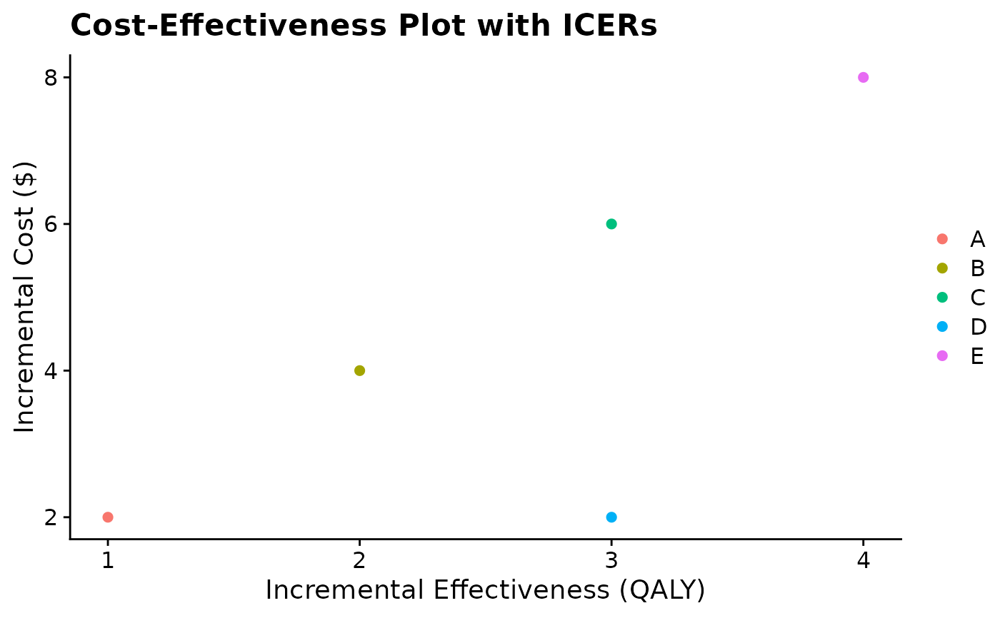
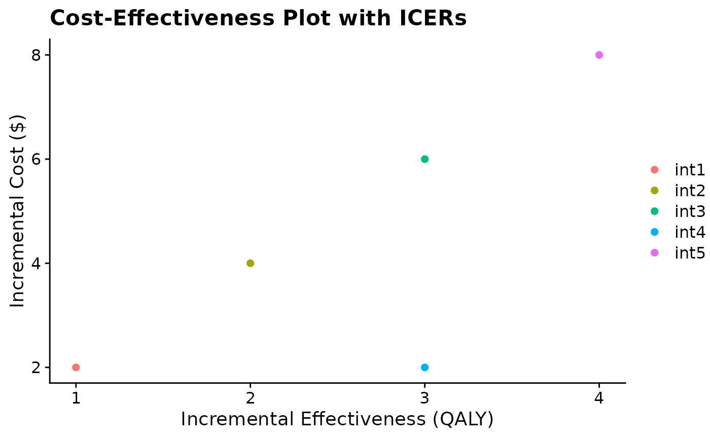

Plot ICERs on a cost-effectiveness plane with incremental effectiveness and incremental cost plotted on the x and y axes, respectively.
icerplot.RdThis function generates a cost-effectiveness scatter plot intended for ICERs. It handles a dataframe with x (QALY) and y (Cost) numeric columns and an optional names column .
Arguments
- data
A dataframe containing at least two numeric columns of identical length.
- x
A variable in the dataframe containing only numeric values. Input incremental effectiveness (i.e., QALY) for ICER plot.
- y
A variable in the dataframe containing only numeric values. Input incremental cost for ICER plot.
- names
An argument to include strategy/intervention names from dataframe in the plot legend. Set to NULL as default. If NULL, labels will default to random letters in alphabetical order based on nrows in dataframe.
- na.rm
An argument specifying how to handle NA values in data before creating a plot; set to "TRUE" as default.
Examples
# Creating a dataframe with ICERs
icers <- data.frame(
intervention = c("int1", "int2", "int3", "int4", "int5"),
effect = c(1, 2, 3, 3, 4),
cost = c(2, 4, 6, 2, 8))
# Applying function to create ICER plot with no "names" argument
icerplot(data = icers, x = "effect", y = "cost")

# Applying function with "names" argument specified
icerplot(data = icers, x = "effect", y = "cost", names = "intervention")
